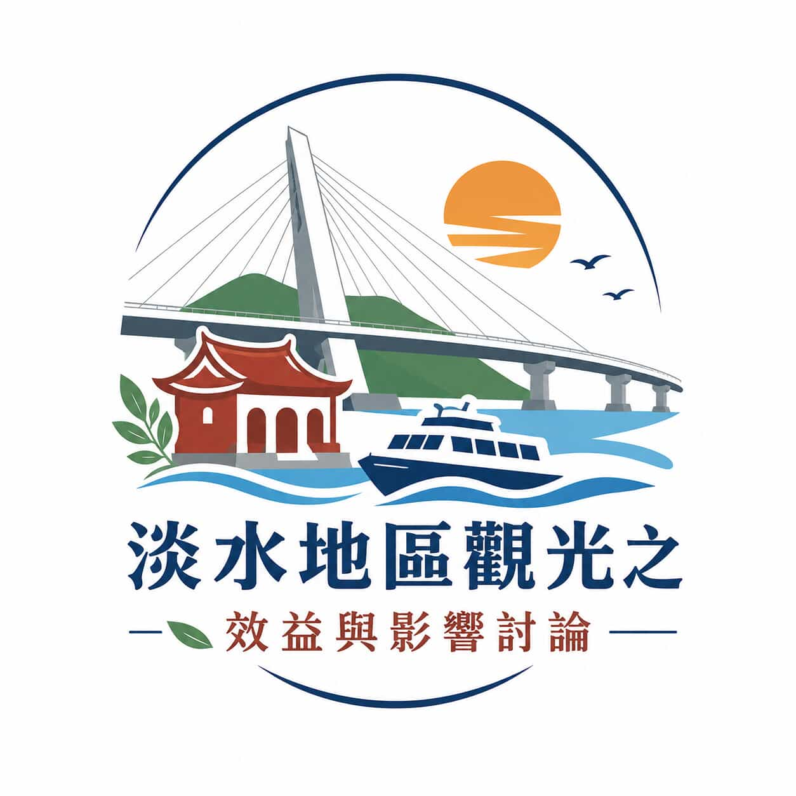

從人文視角洞察觀光永續新契機。結合歷史溫度與理性數據分析，探討淡水觀光產業的效益與影響。
商圈與產業發展探討。分析觀光帶來的稅收與就業對在地經濟和產業上的影響。
古蹟與觀光的平衡點。實地探查過度觀光可能對文化資產與景觀美感造成的損害。
觀光客與在地居民的互動。研究負面效益如噪音、物價上漲，並透過訪談了解居民感受。
輕軌、台灣好行與交通動線。結合人流數據與統計，分析交通建設如何改變觀光客足跡。
以「觀光」為核心，查找相關的廣義詞、狹義詞(如:永續觀光)與相關詞。
即時性、相關性、權威性、準確性與目的性，確保您的文獻來源可靠。
新北市政府資料開放平台、交通部觀光統計資料庫等官方數據入口。